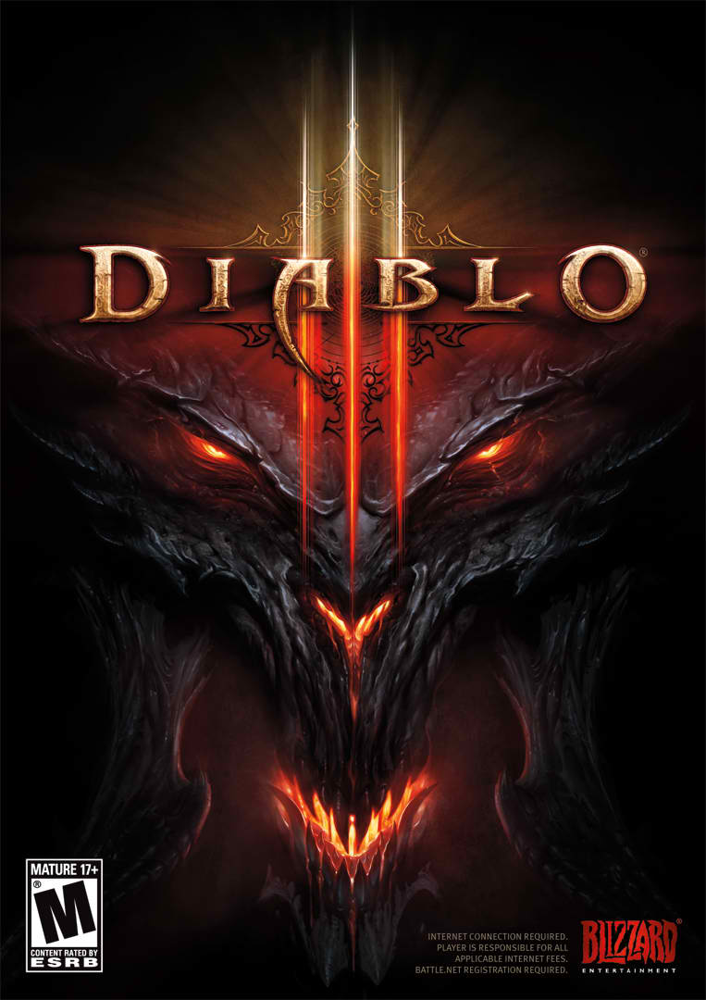
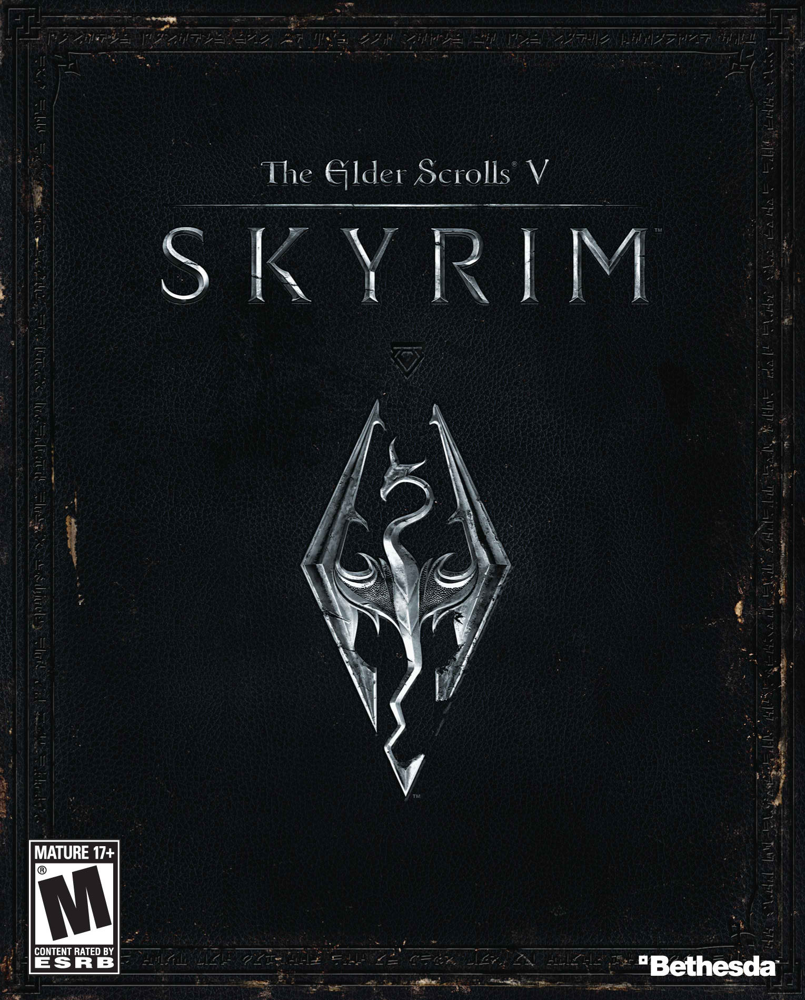

- Assassin's Creed 3

Assassin's Creed III is a 2012 action-adventure video game developed by Ubisoft Montreal and published by Ubisoft for PlayStation 3, Xbox 360, Wii U, and Microsoft Windows. It is the fifth major installment in the Assassin's Creed series, and a direct sequel to 2011's Assassin's Creed: Revelations. The game was released worldwide for PlayStation 3 and Xbox 360, beginning in North America on October 30, 2012, with a Wii U and Microsoft Windows release following in November 2012.
The plot is...
- Prototype 2

Prototype 2 is an open world action-adventure video game, released for consoles on April 24, 2012.
Developed by Canadian studio Radical Entertainment and published by Activision, it is the sequel to 2009's Prototype.
The game was announce...
- Defense of the Acients 2

Dota 2 is a so-called MOBA. MOBA stands for ‘multiplayer online battle arena’, a terrible catch-all term that describes all games ever. A better term would be ‘DotA-like’ – referencing the originator of the genre: Warcraft III’s Defence of the Ancients mod. In a world filling up with DotA-likes – League of Legends, Heroes of Newerth, SMITE, Bloodline Champions– Dota 2 is the most dotingly DotA-like.
Like DotA, Dota...
- Diablo 3

Diablo III is an action role-playing video game developed and published by Blizzard Entertainment. It is the third installment in the Diablo franchise that features elements of the dungeon crawl and hack and slash genres.
Diablo III was released in the Americas, Europe, South Korea, and Taiwan on May 15, 2012, and in Russia on June 7, 2012.[3] Diablo III set a new record for fastest-selling PC game by selling over 3.5 million copies in the first 24 hours of its release.[4] It was also the highest selling PC game of 2012, selling more than 12 million copies during the year.
It received...
- Dragon Age: Origins

Dragon Age: Origins is a third-person single-player role-playing video game developed by BioWare's Edmonton studio and published by Electronic Arts. It is the first game in the Dragon Age franchise.
The game was released for Microsoft Windows, PlayStation 3 and Xbox 360 on November 3, 2009, and for Mac OS X on December 21, 2009.
Set in the fictional kingdom...
- Elder Scrolls V: Skyrim

The province of Skyrim might be frigid, but the role-playing game that takes place within it burns with a fire few games possess. In The Elder Scrolls V: Skyrim, you take up arms against dragons, and your encounters with them are invariably exciting--yet depending on where your adventure takes you, such battles may not even represent the pinnacle of your experience. A side quest that starts as a momentary distraction may turn into a full-fledged tale that could form the entirety of a less ambitious game. Yes, Skyrim is another enormous fantasy RPG from a developer that specializes in them, and it could suck up hundreds of hours of your time as you inspect each nook and crevasse for the secrets to be found within. If you know Bethesda Softworks' previous games, you might be unsurprised that Skyrim is not a land without blemish, but rather harbors any number of technical glitches and frustrating idiosyncrasies that tear open the icy veil that blankets the land. Many of them are ones Elder Scrolls fans will probably see coming...